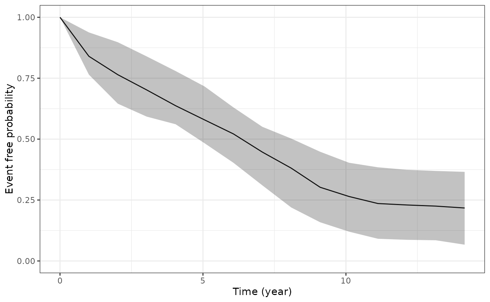

Estimate subject-specific or standardised survival probabilities
Source:R/posterior_survfit.R
posterior_survfit.RdThis function allows us to generate estimated survival probabilities
based on draws from the posterior predictive distribution. By default
the survival probabilities are conditional on an individual's
group-specific coefficients (i.e. their individual-level random
effects). If prediction data is provided via the newdataLong
and newdataEvent arguments, then the default behaviour is to
sample new group-specific coefficients for the individuals in the
new data using a Monte Carlo scheme that conditions on their
longitudinal outcome data provided in newdataLong
(sometimes referred to as "dynamic predictions", see Rizopoulos
(2011)). This default behaviour can be stopped by specifying
dynamic = FALSE, in which case the predicted survival
probabilities will be marginalised over the distribution of the
group-specific coefficients. This has the benefit that the user does
not need to provide longitudinal outcome measurements for the new
individuals, however, it does mean that the predictions will incorporate
all the uncertainty associated with between-individual variation, since
the predictions aren't conditional on any observed data for the individual.
In addition, by default, the predicted subject-specific survival
probabilities are conditional on observed values of the fixed effect
covariates (ie, the predictions will be obtained using either the design
matrices used in the original stan_jm model call, or using the
covariate values provided in the newdataLong and newdataEvent
arguments). However, if you wish to average over the observed distribution
of the fixed effect covariates then this is possible – such predictions
are sometimes referred to as standardised survival probabilties – see the
standardise argument below.
Usage
posterior_survfit(
object,
newdataLong = NULL,
newdataEvent = NULL,
extrapolate = TRUE,
control = list(),
condition = NULL,
last_time = NULL,
prob = 0.95,
ids,
times = NULL,
standardise = FALSE,
dynamic = TRUE,
scale = 1.5,
draws = NULL,
seed = NULL,
...
)Arguments
- object
A fitted model object returned by the
stan_jmmodelling function. Seestanreg-objects.- newdataLong, newdataEvent
Optionally, a data frame (or in the case of
newdataLongthis can be a list of data frames) in which to look for variables with which to predict. If omitted, the model matrices are used. If new data is provided, then it should also contain the longitudinal outcome data on which to condition when drawing the new group-specific coefficients for individuals in the new data. Note that there is only allowed to be one row of data for each individual innewdataEvent, that is, time-varying covariates are not allowed in the prediction data for the event submodel. Also,newdataEventcan optionally include a variable with information about the last known survival time for the new individuals – see the description for thelast_timeargument below – however also note that when generating the survival probabilities it is of course assumed that all individuals innewdataEventhave not yet experienced the event (that is, any variable innewdataEventthat corresponds to the event indicator will be ignored).- extrapolate
A logical specifying whether to extrapolate the estimated survival probabilities beyond the times specified in the
timesargument. IfTRUEthen the extrapolation can be further controlled using thecontrolargument.- control
A named list with parameters controlling extrapolation of the estimated survival function when
extrapolate = TRUE. The list can contain one or more of the following named elements:epointsa positive integer specifying the number of discrete time points at which to calculate the forecasted survival probabilities. The default is 10.
edista positive scalar specifying the amount of time across which to forecast the estimated survival function, represented in units of the time variable
time_var(from fitting the model). The default is to extrapolate between the times specified in thetimesargument and the maximum event or censoring time in the original data. Ifedistleads to times that are beyond the maximum event or censoring time in the original data then the estimated survival probabilities will be truncated at that point, since the estimate for the baseline hazard is not available beyond that time.
- condition
A logical specifying whether the estimated subject-specific survival probabilities at time
tshould be conditioned on survival up to a fixed time pointu. The default is forconditionto be set toTRUE, unless standardised survival probabilities have been requested (by specifyingstandardise = TRUE), in which caseconditionmust (and will) be set toFALSE. When conditional survival probabilities are requested, the fixed time pointuwill be either: (i) the value specified via thelast_timeargument; or if thelast_timeargument isNULLthen the latest observation time for each individual (taken to be the value in thetimesargument ifnewdataEventis specified, or the observed event or censoring time ifnewdataEventisNULL.- last_time
A scalar, character string, or
NULL. This argument specifies the last known survival time for each individual when conditional predictions are being obtained. IfnewdataEventis provided and conditional survival predictions are being obtained, then thelast_timeargument can be one of the following: (i) a scalar, this will use the same last time for each individual innewdataEvent; (ii) a character string, naming a column innewdataEventin which to look for the last time for each individual; (iii)NULL, in which case the default is to use the time of the latest longitudinal observation innewdataLong. IfnewdataEventisNULLthen thelast_timeargument cannot be specified directly; instead it will be set equal to the event or censoring time for each individual in the dataset that was used to estimate the model. If standardised survival probabilities are requested (i.e.standardise = TRUE) then conditional survival probabilities are not allowed and therefore thelast_timeargument is ignored.- prob
A scalar between 0 and 1 specifying the width to use for the uncertainty interval (sometimes called credible interval) for the predictions. For example
prob = 0.95(the default) means that the 2.5th and 97.5th percentiles will be provided.- ids
An optional vector specifying a subset of IDs for whom the predictions should be obtained. The default is to predict for all individuals who were used in estimating the model or, if
newdataLongandnewdataEventare specified, then all individuals contained in the new data.- times
A scalar, a character string, or
NULL. Specifies the times at which the estimated survival probabilities should be calculated. It can be either: (i)NULL, in which case it will default to the last known survival time for each individual, as determined by thelast_timeargument; (ii) a scalar, specifying a time to estimate the survival probability for each of the individuals; or (iii) ifnewdataEventis provided, it can be the name of a variable innewdataEventthat indicates the time at which the survival probabilities should be calculated for each individual.- standardise
A logical specifying whether the estimated subject-specific survival probabilities should be averaged across all individuals for whom the subject-specific predictions are being obtained. This can be used to average over the covariate and random effects distributions of the individuals used in estimating the model, or the individuals included in the
newdataarguments. This approach of averaging across the observed distribution of the covariates is sometimes referred to as a "standardised" survival curve. Ifstandardise = TRUE, then thetimesargument must be specified and it must be constant across individuals, that is, the survival probabilities must be calculated at the same time for all individuals.- dynamic
A logical that is only relevant if new data is provided via the
newdataLongandnewdataEventarguments. Ifdynamic = TRUE, then new group-specific parameters are drawn for the individuals in the new data, conditional on their longitudinal biomarker data contained innewdataLong. These group-specific parameters are then used to generate individual-specific survival probabilities for these individuals. These are often referred to as "dynamic predictions" in the joint modelling context, because the predictions can be updated each time additional longitudinal biomarker data is collected on the individual. On the other hand, ifdynamic = FALSEthen the survival probabilities will just be marginalised over the distribution of the group-specific coefficients; this will mean that the predictions will incorporate all uncertainty due to between-individual variation so there will likely be very wide credible intervals on the predicted survival probabilities.- scale
A scalar, specifying how much to multiply the asymptotic variance-covariance matrix for the random effects by, which is then used as the "width" (ie. variance-covariance matrix) of the multivariate Student-t proposal distribution in the Metropolis-Hastings algorithm. This is only relevant when
newdataEventis supplied anddynamic = TRUE, in which case new random effects are simulated for the individuals in the new data using the Metropolis-Hastings algorithm.- draws
An integer indicating the number of MCMC draws to return. The default is to set the number of draws equal to 200, or equal to the size of the posterior sample if that is less than 200.
- seed
An optional
seedto use.- ...
Currently unused.
Value
A data frame of class survfit.stanjm. The data frame includes
columns for each of the following:
(i) the median of the posterior predictions of the estimated survival
probabilities (survpred);
(ii) each of the lower and upper limits of the corresponding uncertainty
interval for the estimated survival probabilities (ci_lb and
ci_ub);
(iii) a subject identifier (id_var), unless standardised survival
probabilities were estimated;
(iv) the time that the estimated survival probability is calculated for
(time_var).
The returned object also includes a number of additional attributes.
Note
Note that if any variables were transformed (e.g. rescaled) in the data
used to fit the model, then these variables must also be transformed in
newdataLong and newdataEvent. This only applies if variables
were transformed before passing the data to one of the modeling functions and
not if transformations were specified inside the model formula.
References
Rizopoulos, D. (2011). Dynamic predictions and prospective accuracy in joint models for longitudinal and time-to-event data. Biometrics 67, 819.
See also
plot.survfit.stanjm for plotting the estimated survival
probabilities, ps_check for for graphical checks of the estimated
survival function, and posterior_traj for estimating the
marginal or subject-specific longitudinal trajectories, and
plot_stack_jm for combining plots of the estimated subject-specific
longitudinal trajectory and survival function.
Examples
if (.Platform$OS.type != "windows" || .Platform$r_arch != "i386") {
# \donttest{
# Run example model if not already loaded
if (!exists("example_jm")) example(example_jm)
# Obtain subject-specific survival probabilities for a few
# selected individuals in the estimation dataset who were
# known to survive up until their censoring time. By default
# the posterior_survfit function will estimate the conditional
# survival probabilities, that is, conditional on having survived
# until the event or censoring time, and then by default will
# extrapolate the survival predictions forward from there.
ps1 <- posterior_survfit(example_jm, ids = c(7,13,15))
# We can plot the estimated survival probabilities using the
# associated plot function
plot(ps1)
# If we wanted to estimate the survival probabilities for the
# same three individuals as the previous example, but this time
# we won't condition on them having survived up until their
# censoring time. Instead, we will estimate their probability
# of having survived between 0 and 5 years given their covariates
# and their estimated random effects.
# The easiest way to achieve the time scale we want (ie, 0 to 5 years)
# is to specify that we want the survival time estimated at time 0
# and then extrapolated forward 5 years. We also specify that we
# do not want to condition on their last known survival time.
ps2 <- posterior_survfit(example_jm, ids = c(7,13,15), times = 0,
extrapolate = TRUE, condition = FALSE, control = list(edist = 5))
# Instead we may want to estimate subject-specific survival probabilities
# for a set of new individuals. To demonstrate this, we will simply take
# the first two individuals in the estimation dataset, but pass their data
# via the newdata arguments so that posterior_survfit will assume we are
# predicting survival for new individuals and draw new random effects
# under a Monte Carlo scheme (see Rizopoulos (2011)).
ndL <- pbcLong[pbcLong$id %in% c(1,2),]
ndE <- pbcSurv[pbcSurv$id %in% c(1,2),]
ps3 <- posterior_survfit(example_jm,
newdataLong = ndL, newdataEvent = ndE,
last_time = "futimeYears", seed = 12345)
head(ps3)
# We can then compare the estimated random effects for these
# individuals based on the fitted model and the Monte Carlo scheme
ranef(example_jm)$Long1$id[1:2,,drop=FALSE] # from fitted model
colMeans(attr(ps3, "b_new")) # from Monte Carlo scheme
# Lastly, if we wanted to obtain "standardised" survival probabilities,
# (by averaging over the observed distribution of the fixed effect
# covariates, as well as averaging over the estimated random effects
# for individuals in our estimation sample or new data) then we can
# specify 'standardise = TRUE'. We can then plot the resulting
# standardised survival curve.
ps4 <- posterior_survfit(example_jm, standardise = TRUE,
times = 0, extrapolate = TRUE)
plot(ps4)
# }
}
#> Drawing new random effects for 2 individuals. Monitoring progress:
#>
|
| | 0%
|
|=================================== | 50%
|
|======================================================================| 100%
